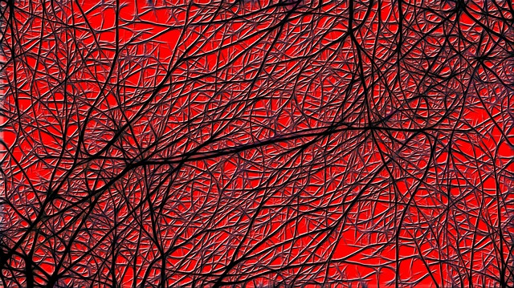

Creating hyperlinks
Making your activity interactive begins with hyperlinks. You can write several html files, each of which will
display a page. Hyperlinking words or phrases (or even images) on one page will bring the user to another page.
To add a link to text on a page,
surround that text with an <a> tag. <a> stands for "anchor."
Take a look at the source code (Ctrl-U or Cmd-U)
for this page to see how to link to another page on your site
You can also link to external web pages, like so
or
to images
(Image used with permisson from pixabay.com)
You can even link to specific areas within an image by using an "image map." Here's a tool
that creates the map for you. Define each area, then put in the appropriate link. Imagine a picture of a room, where
clicking on different doors in the room takes the user to other rooms, for example, or where clicking on an object links
to a page with a "zoomed-in" view of that object.
Before continuing, think about how you might structure your story as a group of pages that link to one another. How might you
organize the navigation?
So...you now can create multiple pages that link to one another. But can't we make them look a little nicer
than this? We can! Click here to learn how